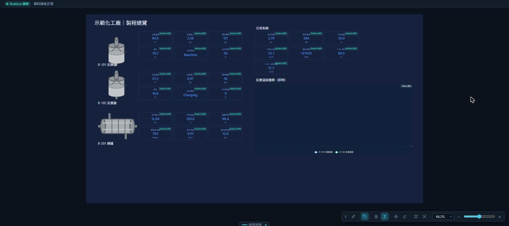
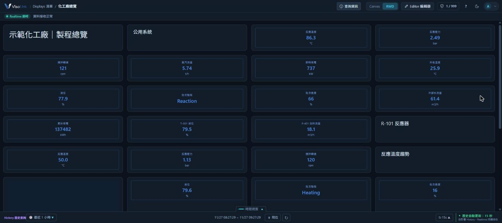
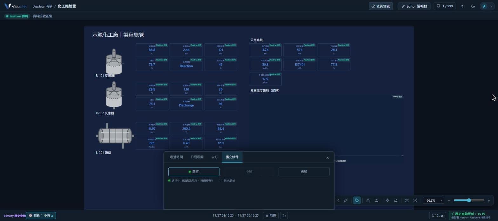
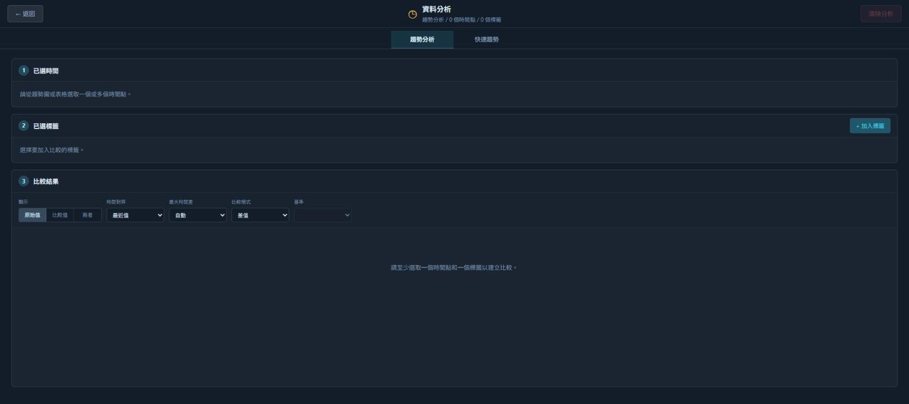
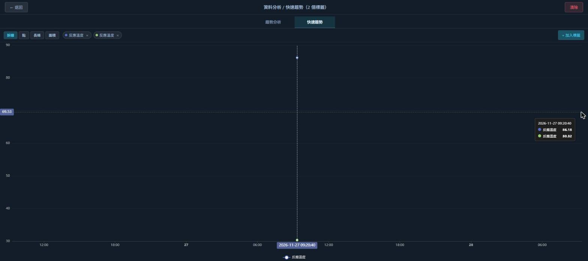
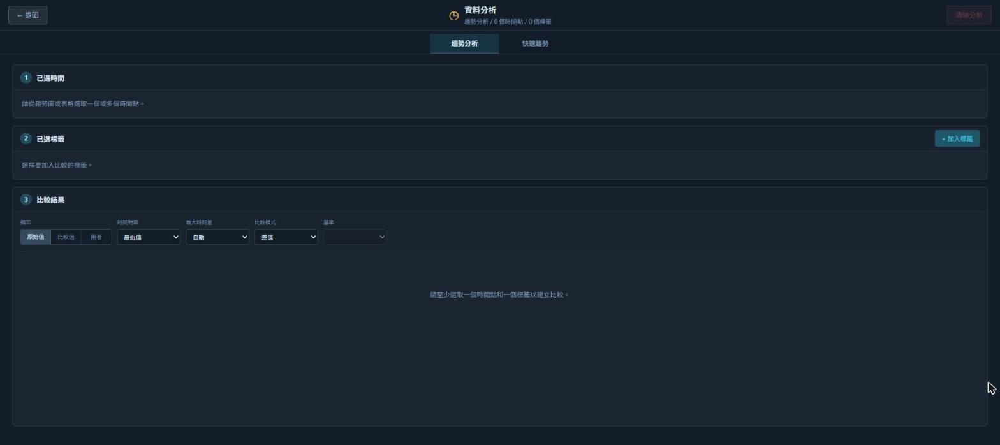
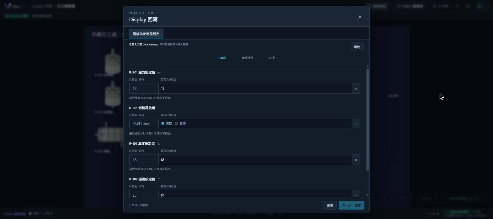
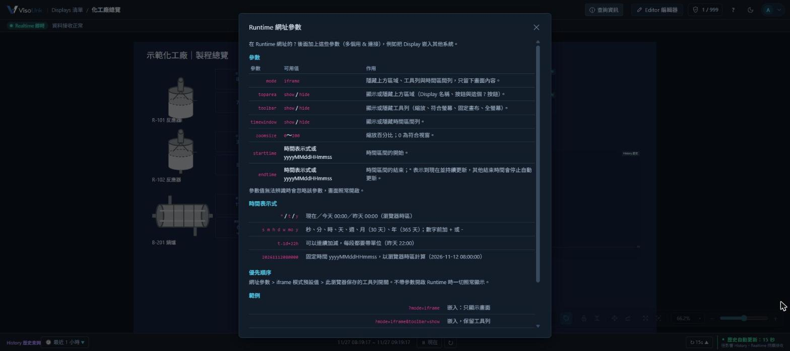

COURSE 01 · OPERATION
Runtime Operation
從登入、開啟正確 Display，到在相同時間情境中完成分析、回寫與回報；桌機、手機與平板都適用。
一般監看人員必修設計／管理人員理解建議 75 分鐘對應 VisoLink 1.4.0-beta
LEARNING OUTCOMES
完成後，你應能獨立完成一次監看循環
01找到畫面
登入後使用資料夾、搜尋、我的最愛與最近使用找到 Display；手機與平板也能開啟。
02確認情境
分辨 Realtime 即時與 History 歷史，確認時間範圍或一鍵切換班別。
03分析與操作
使用 Quick Trend、Time Marker 比較資料；獲授權時以回寫表單送出設定值。
04正確回報
保留足以讓他人重現問題的資訊，並看懂維護中等系統狀態。
STEP 0 · SIGN IN
用自己的帳號登入；個人裝置可保存登入
登入
開啟組織提供的 VL Client 網址，輸入帳號與密碼後進入 Display 清單。登入失敗會顯示「登入失敗，請檢查帳號與密碼。」
保存登入
勾選「保存登入」後，關掉瀏覽器再打開不必重新登入。共用電腦不要勾選，離開時從右上使用者選單登出。
多台裝置
同一帳號可在多台裝置同時登入；每台登入中的裝置占 1 點授權。點數不足或被管理員強制登出時，需要重新登入。
為什麼要用個人帳號：帳號決定可見的 Display 與資料，也決定能否回寫；稽核紀錄以帳號追溯操作者。
STEP 1 · FIND
從 Display 清單進入正確工作情境
 圖面庫：左側切換檢視範圍與資料夾；卡片標示 RWD、底板等狀態；上方狀態卡顯示 Display、授權、即時連線與資料來源。
圖面庫：左側切換檢視範圍與資料夾；卡片標示 RWD、底板等狀態；上方狀態卡顯示 Display、授權、即時連線與資料來源。- 確認登入身分右上角帳號會影響可見範圍。
- 縮小範圍全部 Display、我的最愛、最近使用或工作資料夾。
- 辨識 Display名稱、縮圖；「RWD」標記代表有手機／平板版面。
- 進入 Runtime點縮圖或名稱；不要誤點鉛筆進入 Editor。
載入失敗時畫面顯示「Display 載入失敗，請稍後再試。」與「重新載入」；這不等於「沒有 Display」。
STEP 2 · ORIENT
先辨識五個操作區，再開始判讀
 「化工廠總覽」：數值右上標示 Realtime 即時，趨勢右上標示 History 歷史；右下為浮動工具列，下方為時間列。
「化工廠總覽」：數值右上標示 Realtime 即時，趨勢右上標示 History 歷史；右下為浮動工具列，下方為時間列。- 上方導覽返回清單、查詢資訊、Editor、授權、「?」、主題、Canvas／RWD。
- 即時狀態列「Realtime 即時」與資料接收狀態。
- 中央圖面數值、趨勢、表格、狀態等元件。
- 浮動工具列回寫表單、資料標籤、顯示模式、資料分析與縮放。
- 時間列History 歷史的時間範圍、現在／暫停、更新頻率。
REALTIME vs HISTORY
先看元件右上的標示：現在的值，還是一段時間的資料？
●Realtime 即時
來自 DataGateway 即時推送，只顯示現在；不受下方時間範圍影響。上方狀態列顯示資料接收狀態。
回答：現在是多少？｜
━History 歷史
依下方時間範圍查詢；「歷史自動更新」只影響 History，Realtime 持續接收。
回答：這段時間發生了什麼？→
✓判讀
暫停時間或切到過去，只有 History 元件跟著變；Realtime 仍是現在。
標示太多時：點浮動工具列「顯示或隱藏 Realtime/History 資料標籤」。即時資料不可使用（權限不足或已停用）時元件會提示，請聯絡管理者確認即時 DataBinding 權限。
DATA STATE
沒有數字，不等於設備數值是零
載入中
畫面正在取得資料；暫時連不上伺服器時會自動重試，等待完成後再判讀。
無資料
指定時間沒有可用記錄，需檢查時間與來源。
無權限
能進入 Display，但沒有該資料的使用權限。
錯誤
取得或轉換失敗，記錄訊息與影響元件；仍失敗時點「重新載入」。
判讀原則：不要把「—」「無資料」或載入失敗口頭回報成 0；它們代表完全不同的營運意義。
VIEW MODES
依設備與任務選擇顯示方式；設定會被記住

全螢幕模式隱藏上方導覽與下方時間列；再點一次工具列按鈕即可離開。固定畫布
以設計尺寸及捲軸瀏覽；適合精確位置與大型製程圖。
符合螢幕／符合物件
縮放整張畫布或實際物件範圍；適合快速掌握全貌。
全螢幕模式
隱藏上下列，最大化監看空間；適合中控大屏。
工具列記憶
固定畫布、全螢幕、移動畫布會記在這個瀏覽器，切換 Display 仍沿用。
切換顯示模式只改變觀看方式，不會改變資料與時間條件。網址參數的設定優先於記住的設定。
MOBILE & TABLET
手機與平板開啟有 RWD 版面的 Display，自動改用卡片排列

桌機上切換為「RWD」時的示範畫面：各數值以卡片排列並持續更新。- 手機或平板登入用瀏覽器開啟 VL Client 並登入。
- 開啟有「RWD」標記的 Display畫面自動使用 RWD 版面，不需縮放整張畫布。
- 桌機檢查點上方「Canvas／RWD」切到「RWD」。
- 沒有 RWD 版面時仍以 Canvas 顯示，可用縮放與移動畫布瀏覽。
GLOBAL TIME
整張 Display 的歷史資料，必須在同一時間情境下解讀
1點時間範圍例如「最近 1 小時」
2最近時間5 分鐘至 30 天快捷值
3日曆區間／自訂固定起訖或 *-1h 到 *
4擴充條件管理者設定的班別等
5確認起訖看下方實際時間
常見錯誤：完成歷史追查後未切回「現在」，下一班人員把歷史畫面誤認為目前狀態。「今天」「昨天」依瀏覽器所在時區的午夜計算；範圍愈長，需要處理的資料量通常愈大。
SHIFT PRESETS
班別一鍵切換：從「擴充條件」直接套用早班、中班、夜班

「擴充條件」頁籤顯示示範的早班、中班、夜班；綠點表示進行中（結束為現在，持續更新），灰色表示尚未開始。- 點時間範圍按鈕開啟時間設定。
- 切到「擴充條件」列出管理者設定的條件。
- 點要查看的班別尚未開始的班別按鈕為停用。
- 確認起訖時間已換成該班別的區間。
條件由管理者在 Admin「Client 設定」維護（Course 06）；修改後 Runtime 頁面重新整理才會生效。
TIME WINDOW
時間窗：拖曳調整區間，決定是否持續跟隨現在
 展開「時間視窗」顯示查詢開始、選取的區間與查詢結束，可拖曳兩端；右下顯示歷史自動更新狀態。
展開「時間視窗」顯示查詢開始、選取的區間與查詢結束，可拖曳兩端；右下顯示歷史自動更新狀態。- 時間視窗展開時間軸，拖曳兩端調整區間。
- 現在／暫停暫停時範圍不再向前移動，保留目前情境。
- ↻ 重新整理立即重新載入目前範圍。
- 更新頻率例如「15s」；右下確認最近完成時間。
暫停只影響 History；Realtime 即時資料不受影響。
ANALYSIS ENTRY
在 Runtime 情境中直接進入資料分析

趨勢分析依序使用「1 已選時間」「2 已選標籤」「3 比較結果」；上方切換趨勢分析與快速趨勢。- 開啟資料分析浮動工具列圖示數字＝已建立的時間標記數。
- 選擇模式趨勢分析或快速趨勢。
- 返回點「← 返回」回到圖面。
- 清除分析需要重新開始時使用。
QUICK TREND
快速查看一段時間內的資料變化
Quick Trend 加入畫面使用中的標籤，切換折線、點、長條或面積圖，適合快速確認上升、下降、週期與多序列關係。
- 點「＋加入標籤」，在右側搜尋並勾選，點「完成」
- 確認使用中的全域時間範圍
- 辨識圖例、單位與資料尺度
- 標籤清單以目前 Display 已使用且帳號有權限的資料為基礎

加入兩個反應溫度標籤後的快速趨勢；游標停在圖上顯示各標籤在該時間的數值。TIME MARKER
時間標記是可以保留與整理的分析物件

「3 比較結果」：至少選取一個時間點和一個標籤後才會建立比較。時間標記是目前分析的選取內容，不會改寫原始資料。
COMPARE
比較結果取決於資料如何對齊與計算
時間對齊
最近值、上一筆、下一筆、內插或精確；需要逐筆完全相符時才選「精確」。
最大時間差
自動、1／5／30 分鐘、1 小時或無限制；限制資料與標記時間的距離。
比較模式與基準
差值、百分比變化、比率、指數或與前值差異；指定哪個時間點作為基準。
先說明想回答的問題，再選擇比較方式；工具不會替使用者決定分析意義。
WRITE-BACK
設備回寫：填寫 → 確認清單 → 結果，以設備讀回為準

「Display 回寫」的「1 填寫」：每個欄位顯示目前值・即時、最近接收時間與要寫入的新值；未修改的欄位不送出。- 回寫表單浮動工具列開啟；多張表單用上方分頁切換。
- 1 填寫只填要變更的欄位；「讀取」重新讀取目前值。
- 2 確認清單核對目前值與新值，再「確認送出」。
- 3 結果請求編號、逐欄寫入結果與設備讀回。
安全原則：送出成功不代表設備已改值，請以「讀回相符」為準。需要即時 DataBinding 的使用＋寫入權限；表單顯示「回寫目標未設定」或系統維護中時不能送出。
URL PARAMETERS
網址參數：把 Display 嵌入其他系統

點上方「?」開啟「Runtime 網址參數」，列出參數、可用值、時間表示式、優先順序與範例。mode=iframe隱藏上方區域、工具列與時間列，只留畫面內容。
toparea／toolbar／timewindowshow 或 hide，各自顯示或隱藏。
zoomsize0～200 縮放百分比；0 為符合視窗。
starttime／endtime時間表示式或 yyyyMMddHHmmss；結束為 * 表示到現在並持續更新。
優先順序：網址參數 > iframe 模式預設值 > 此瀏覽器保存的工具列開關。無法辨識的參數會被忽略。點「複製目前 Display 範例網址」可直接貼到其他系統。
MAINTENANCE
看到「系統維護中」：不用操作，結束後自動回到原畫面
什麼時候出現
管理者在升級、搬移、備份還原等作業時把系統切到「維護中」，Client 在 30 秒內顯示維護畫面。
維護期間
暫停 Runtime 查詢與即時資料、回寫與編輯 Display；畫面每 30 秒自動確認一次並顯示最後確認時間。
維護結束
自動回到原本的 Display，不需要重新登入。
回報時：維護中不是故障；若維護時間超過公告，再向管理者確認。備份中心執行還原時，也會讓受管系統暫時進入維護中。
REPORT
一份可追溯的回報需要六項資訊
Display畫面名稱、Canvas 或 RWD 版面、使用裝置
對象設備、Tag 或區域
時間發生與觀察範圍；即時或歷史
現象數值、狀態與變化
操作已執行的確認步驟；回寫請求編號
影響單一元件或整體範圍
截圖應保留時間列及必要上下文，避免只裁切一個數字；不要截到密碼或其他機密。
HANDS-ON
Runtime 操作檢核
任務 1登入並找到指定 Display，指出哪些元件是 Realtime、哪些是 History，說明目前時間狀態。
任務 2用「擴充條件」切換到指定班別，加入兩個標籤與兩個 Time Marker，選擇合適比較模式並說明結果。
任務 3以手機或桌機「RWD」檢視同一張 Display；用網址參數開出只有畫面內容的版本。
任務 4（獲授權者）以回寫表單送出一個測試設定值，讀出請求編號與設備讀回結果。
通過標準全程不混淆歷史與即時、不把無資料當成 0，回寫以讀回結果確認，且他人能依回報重現分析情境。